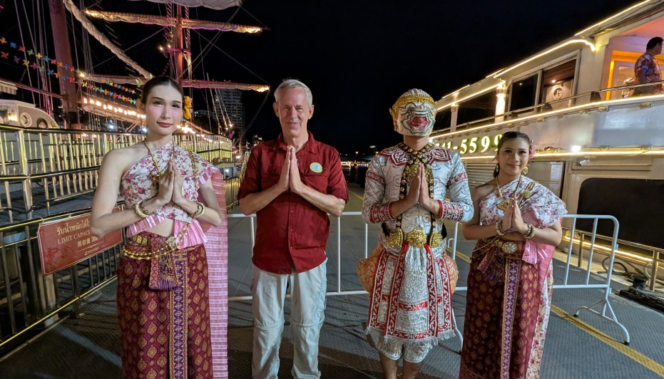

An invitation to see whether our stories resonate.

If you're reading this, something about you caught my attention. Attraction may begin with the physical, but lasting connection comes from shared values, compatible goals, common interests, and that rare spark of chemistry. This page is simply a comfortable way for you to learn a little about me and decide whether you'd like to continue the conversation.
I'm a traditional man born in the 1950s — not in the sense of dominance, but in the sense of honor, respect, responsibility, and mutual strength. I believe in equality in relationships but will step up as a leader when the situation demands it.
I'm a Christian who attends services regularly. I'm imperfect, human, and still growing and learning. I'm open to your faith background as long as Jesus Christ is recognized as Messiah.
My professional life was extraordinary:
I've traveled to 40+ countries, all seven continents, and even spent a week at the South Pole. Adventure is part of my nature.
In 2022, I was honored to be inducted into the Aerospace Engineering & Engineering Mechanics Academy of Distinguished Alumni at The University of Texas at Austin.
My marriage lasted nearly 40 years but ended in 2016. It was functional but not fulfilling for either of us, but we honored our commitment. We raised two children; I remain close to one but am estranged from the other. I have three granddaughters, though only one relationship is active due to the estrangement.
Later in life, well after my divorce, I adopted a young lady who had been abandoned by her father as a child. We formed a genuine father-daughter bond when she was 12, and I helped her through school and life. She’s now in her mid 20s and though she lives far away, is still very much part of my heart. I adopted her at 22; some see it as odd, others perverse. I followed my heart because she wanted a dad and asked me to fill that void - and I wanted to help her through life and to get an education. I care for her honorably and do not tolerate insinuations about our relationship.
I connect more easily with women than men except for my military battle buddies who are spread around the country. I have female friends, including hiking partners around the world, and I value those friendships. All are in committed relationships but jealousy has been an issue in past relationships, so I’m upfront about it.
My health is excellent, and my energy level matches men a decade or more younger. My spiritual, mental, financial and emotional health are fine too; I'm truly blessed in so many ways. I don’t need a nurse, purse, cook (though that would be nice :) or maid — just a partner who values me for my heart, mind, and soul rather than for what I can provide.
My interests include:
I'm a one-woman man. I can only invest deeply in one truly intimate emotional and physical relationship at a time. I enjoy friendly banter and a minor tease — some might say I'm flirting but I'm just being Texas Friendly :). Let there be no confusion - I'm 100% loyal and committed when I choose someone and they choose me back. BTW, I've been around long enough to know the woman does the choosing.
I'm a somewhat reformed romantic in that I don’t fall fast anymore - but otherwise I'm a true romantic. I want connection to grow naturally now through shared values, friendship, and aligned expectations (great theory, difficult in practice). Ultimately, I'm seeking a lifelong companion — a wife.
After returning from Afghanistan, my marriage dissolved and I faced difficult emotional terrain. I was later diagnosed with moderate PTSD and have been in VA-provided combat veterans counseling for several years. I'm grounded, stable, and generally well-behaved these days :).
I've an INTP personality type and know my love languages. Tell me yours and I'll share mine. :) But by now I suspect you can guess.
Based on my travels and adventures some think I'm sophisticated or should be. I'm not. I'm just a regular country boy from south Texas who has had some really exotic experiences.
5’11.5”, 170 lbs, lean, blue eyes, gray-blond hair.
If any part of my story resonates with you — if you'd like to compare experiences, share a conversation, or explore whether friendship or something deeper might grow — I’d be honored to hear your story.
Email: intrepidtexan@yahoo.com